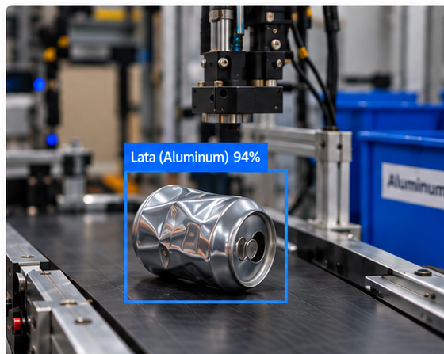

Panel principal
Resumen general del sistema de clasificación automatizada.
Flujo del proceso
Estado actual de la secuencia de clasificación de residuos.
DetecciónEn proceso
LocalizaciónPendiente
PlanificaciónPendiente
AgarrePendiente
TrasladoPendiente
ClasificaciónPendiente
Operación actual
Información del residuo en proceso de clasificación.

ALUMINIO
Lata · Aluminio · 94%
SIMULACIÓN EN VIVO
--:--:--
- Residuo detectado
- Lata de aluminio
- Confianza YOLO
- 94%
- Posición estimada
- X: 215 mm | Y: 132 mm | Z: 48 mm
- Destino
- Contenedor de aluminio
- Modo experimental
- Con optimización
Últimas operaciones
Registro de las operaciones más recientes del sistema.
| Hora | Residuo | Resultado | Tiempo |
|---|
Monitoreo
Seguimiento del proceso de clasificación en tiempo real.
Vista de detección
Transmisión simulada en tiempo real de la cámara.
ALUMINIO
Lata · Aluminio · 94%
SIMULACIÓN EN VIVO
--:--:--
Objeto detectadoLata de aluminioCategoríaAluminio
Confianza94%Posición estimadaX: 215 mm | Y: 132 mm | Z: 48 mm
Estado del monitor
Información del estado actual del proceso.
- Estado actual
- Detectando
- Etapa actual
- 1 de 6
- Destino
- Contenedor de aluminio
- Modo experimental
- Con optimización
- Tiempo transcurrido del ciclo
- 0.0 s
- Posición objetivo
- X: 215 mm | Y: 132 mm | Z: 48 mm
DetecciónAnalizando la imagen de la cámara.
0.0 sLocalizaciónEstimando la posición del objeto.
—PlanificaciónGenerando la trayectoria.
—AgarrePreparando la pinza.
—TrasladoMoviendo hacia el contenedor.
—ClasificaciónConfirmando el depósito.
—CámaraConectadaTransmisión de video activa.
Modelo YOLOActivoEjecutando inferencia en tiempo real.
PinzaAbiertaEn espera del objeto.
Última actualización--Datos en tiempo real del sistema.
Clasificaciones
Historial de operaciones y resultados de clasificación.
Total de operaciones128Registros en el período
Clasificaciones correctas11992.9% del total
Clasificaciones fallidas97.1% del total
Tiempo promedio4.3 sPor operación
Historial de clasificaciones
Últimas operaciones de clasificación realizadas.
| Fecha/Hora | Residuo | Categoría | Confianza | Resultado | Tiempo |
|---|
Estado del sistema
Estado actual de los principales componentes del sistema.
CámaraConectada
YOLOActivo
MonitorOperativo
PinzaDisponible
PlanificaciónOperativa